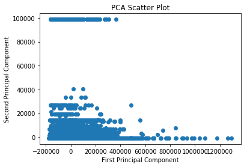

The algorithm consist of a target/outcome variable (or dependent variable) which is to be predicted from a given set of predictors (independent variables). Using these set of variables, we generate a function that map inputs to desired outputs. The training process continues until the model achieves a desired level of accuracy on the training data.
Examples of Supervised Learning: Regression, Decision Tree, Random Forest, kNN, Logistic Regression, etc.
In this algorithm, we do not have any target or outcome variable to predict/estimate. It is used for clustering population in different groups, which is widely used for segmenting customers in different groups for specific intervention.
Examples of Unsupervised Learning: Apriori, k-means.
Using this algorithm, the machine is trained to make specific decisions. It works this way: the machine is exposed to an environment where it trains itself continually using trial and error. This machine learns from past experience and tries to capture the best possible knowledge to make accurate business decisions.
Example of Reinforcement Learning: Markov Decision Process.
# [height, weight, shoe_size]X=[[181,80,44],[177,70,43],[160,60,38],[154,54,37],[166,65,40],[190,90,47],[175,64,39],[177,70,40],[159,55,37],[171,75,42],[181,85,43]]Y=['male','male','female','female','male','male','female','female','female','male','male']# Convert the strings into booleansy_train=[]foriinY:ifi=='male':y_train.append(1)else:y_train.append(0)y_train
We establish a relationship between independent and dependent variables by fitting the best line. This best fit line is known as the regression line: Y = \alpha X + \beta.
There are different steps to improve the model:
Using Multiple Linear regressions;
Including interaction terms;
Removing features;
Regularization techniques;
Using a non-linear model (polynomial and other curvilinear regressions).
The code examples below are illustrations of the process. To handle a binary dependent variable (Y), we would rather work with classification models (including logistic regressions).
# Load train and test datasets# Identify the feature and response variable(s)# Values must be numeric and numpy arraysx_train<-input_variables_values_training_datasetsy_train<-target_variables_values_training_datasetsx_test<-input_variables_values_test_datasetsx<-cbind(x_train,y_train)# Train the model using the training sets and# Check the scorelinear<-lm(y_train~.,data=x_train)summary(linear)# Predict the outputpredicted<-predict(linear,x_test)
# Import the librariesfromsklearnimportlinear_modelfromsklearn.metricsimportaccuracy_score# Load the Train and Test Datasets# Identify feature and response variable(s) and# Values must be numeric and numpy arrays#x_train = input_variables_values_training_datasetsx_train=X#y_train = target_variables_values_training_datasetsy_train=y_train#x_test = input_variables_values_test_datasetsx_test=[[190,70,43],[160,60,38]]y_test=[1,0]# y_true# Create the linear regression objectmodel=linear_model.LinearRegression()# Train the modelmodel.fit(x_train,y_train)
# Import the libraryimportstatsmodels.formula.apiassmimportpandasaspd# Load the Train and Test Datasets# Identify feature and response variable(s) and# Values must be numeric and numpy arrays#x_train = input_variables_values_training_datasetsx_train=X#y_train = target_variables_values_training_datasetsy_train=y_train#x_test = input_variables_values_test_datasetsx_test=[[190,70,43],[160,60,38]]y_test=[1,0]# y_true# Create a DataFramedf1=pd.DataFrame(x_train,columns=['height','weight','shoe_size'])df2=pd.DataFrame(y_train,columns=['gender'])df=pd.concat([df1,df2],axis=1)
df.head(3)
height
weight
shoe_size
gender
0
181
80
44
1
1
177
70
43
1
2
160
60
38
0
# State the OLS modelmodel=sm.ols(formula='gender ~ height + weight + shoe_size',data=df).fit()# Print the coefficientsmodel.params
Warnings:[1] Standard Errors assume that the covariance matrix of the errors is correctly specified.[2] The condition number is large, 6.25e+03. This might indicate that there arestrong multicollinearity or other numerical problems.
We estimate discrete values (binary values like 0/1, yes/no, true/false). It predicts the probability of occurrence of an event by fitting data to a logit function. Since, it predicts the probability, its output values lies between 0 and 1.
# Load train and test datasets# Identify the feature and response variable(s)# Values must be numeric and numpy arraysx_train<-input_variables_values_training_datasetsy_train<-target_variables_values_training_datasetsx_test<-input_variables_values_test_datasetsx<-cbind(x_train,y_train)# Train the model using the training sets and# Check the scorelogistic<-glm(y_train~.,data=x_train,family='binomial')summary(logistic)# Predict the outputpredicted<-predict(logistic,x_test)
# Import the librariesimportnumpyasnpfromsklearn.linear_modelimportLogisticRegressionfromsklearn.metricsimportconfusion_matrixfromsklearn.metricsimportaccuracy_score# Load the Train and Test Datasets# Identify feature and response variable(s) and# Values must be numeric and numpy arrays#x_train = input_variables_values_training_datasetsx_train=X#y_train = target_variables_values_training_datasetsy_train=y_train#x_test = input_variables_values_test_datasetsx_test=[[190,70,43],[160,60,38]]y_test=[1,0]# y_true# Assume we have, X (predictor) and Y (target) for# training data set and x_test(predictor) of# test_dataset# Create the logistic regression objectmodel=LogisticRegression(C=1.0,class_weight=None,dual=False,fit_intercept=True,intercept_scaling=1,max_iter=100,multi_class='ovr',n_jobs=1,penalty='l2',random_state=None,solver='liblinear',tol=0.0001,verbose=0,warm_start=False)# Train the modelmodel.fit(x_train,y_train)
It is a type of supervised learning algorithm that is mostly used for classification problems. Surprisingly, it works for both categorical and continuous dependent variables. In this algorithm, we split the population into two or more homogeneous sets. This is done based on most significant attributes/independent variables to make as distinct groups as possible.
library(rpart)# Load train and test datasets# Identify the feature and response variable(s)# Values must be numeric and numpy arraysx_train<-input_variables_values_training_datasetsy_train<-target_variables_values_training_datasetsx_test<-input_variables_values_test_datasetsx<-cbind(x_train,y_train)# Grow the tree fit<-rpart(y_train~.,data=x_train,method="class")summary(fit)# Predict the output predicted<-predict(fit,x_test)
# Import the librariesfromsklearnimporttreefromsklearn.metricsimportconfusion_matrixfromsklearn.metricsimportaccuracy_score# Load the Train and Test Datasets# Identify feature and response variable(s) and# Values must be numeric and numpy arrays#x_train = input_variables_values_training_datasetsx_train=X#y_train = target_variables_values_training_datasetsy_train=y_train#x_test = input_variables_values_test_datasetsx_test=[[190,70,43],[160,60,38]]y_test=[1,0]# y_true# Assumed you have, X (predictor) and Y (target) for# training data set and x_test(predictor) of# test_dataset# Create the tree object model=tree.DecisionTreeClassifier(criterion='gini')# For classification, we can change the algorithm# as 'gini' or 'entropy' (information gain)# by default it is 'gini'# For regression#model = tree.DecisionTreeRegressor()# Train the modelmodel.fit(x_train,y_train)
Random Forest is a term for an ensemble of decision trees. In Random Forest, we have collection of decision trees (so known as “Forest”). To classify a new object based on attributes, each tree gives a classification and we say the tree “votes” for that class. The forest chooses the classification having the most votes (over all the trees in the forest).
Each tree is planted and grown as follows:
If the number of cases in the training set is N, then a sample of N cases is taken at random but with replacement. This sample will be the training set for growing the tree.
If there are M input variables, a number m < M is specified such that at each node, m variables are selected at random out of the M and the best split on these m is used to split the node. The value of m is held constant during the forest growing.
Each tree is grown to the largest extent possible. There is no pruning.
library(randomForest)# Load train and test datasets# Identify the feature and response variable(s)# Values must be numeric and numpy arraysx_train<-input_variables_values_training_datasetsy_train<-target_variables_values_training_datasetsx_test<-input_variables_values_test_datasetsx<-cbind(x_train,y_train)# Fitting the modelfit<-randomForest(y_train~.,x_train,ntree=500)summary(fit)# Predict the output predicted<-predict(fit,x_test)
# Import the librariesfromsklearn.ensembleimportRandomForestClassifierfromsklearn.metricsimportconfusion_matrixfromsklearn.metricsimportaccuracy_score# Load the Train and Test Datasets# Identify feature and response variable(s) and# Values must be numeric and numpy arrays#x_train = input_variables_values_training_datasetsx_train=X#y_train = target_variables_values_training_datasetsy_train=y_train#x_test = input_variables_values_test_datasetsx_test=[[190,70,43],[160,60,38]]y_test=[1,0]# y_true# Assume we have, X (predictor) and Y (target) for# training data set and x_test(predictor) of# test_dataset# Create the Random Forest objectmodel=RandomForestClassifier(n_estimators=1000)# Train the modelmodel.fit(x_train,y_train)
kNN can be used for both classification and regression problems. However, it is more widely used in classification problems in the industry. k-NN is a simple algorithm that stores all available cases and classifies new cases by a majority vote of its k neighbors. The case being assigned to the class is most common amongst its kNN measured by a distance function.
These distance functions can be:
Euclidean,
Manhattan,
Minkowski, and
Hamming.
First three functions are used for continuous function and fourth one (Hamming) for categorical variables. If k = 1, then the case is simply assigned to the class of its nearest neighbor. At times, choosing k turns out to be a challenge while performing kNN modeling.
Things to consider before selecting kNN:
kNN is computationally expensive;
Variables should be normalized/standardized/rescaled or else higher range variables can bias it;
Works on pre-processing stage more before going for kNN like outlier, noise removal.
library(knn)# Load train and test datasets# Identify the feature and response variable(s)# Values must be numeric and numpy arraysx_train<-input_variables_values_training_datasetsy_train<-target_variables_values_training_datasetsx_test<-input_variables_values_test_datasetsx<-cbind(x_train,y_train)# Fitting the modelfit<-knn(y_train~.,data=x_train,k=5)summary(fit)# Predict the output predicted<-predict(fit,x_test)
# Import the librariesfromsklearn.neighborsimportKNeighborsClassifierfromsklearn.metricsimportconfusion_matrixfromsklearn.metricsimportaccuracy_score# Load the Train and Test Datasets# Identify feature and response variable(s) and# Values must be numeric and numpy arrays#x_train = input_variables_values_training_datasetsx_train=X#y_train = target_variables_values_training_datasetsy_train=y_train#x_test = input_variables_values_test_datasetsx_test=[[190,70,43],[160,60,38]]y_test=[1,0]# y_true# Assume we have, X (predictor) and Y (target) for# training data set and x_test(predictor) of# test_dataset# Create the KNeighbors classifier object model KNeighborsClassifier(n_neighbors=6,algorithm='auto',leaf_size=30,metric='minkowski',metric_params=None,n_jobs=1,p=2,weights='uniform')# default value for n_neighbors is 5# Train the modelmodel.fit(x_train,y_train)
It is a classification technique based on Bayes’ theorem with an assumption of independence between predictors. In simple terms, a Naive Bayes classifier assumes that the presence of a particular feature in a class is unrelated to the presence of any other feature. For example, a fruit may be considered to be an apple if it is red, round, and about 3 inches in diameter. Even if these features depend on each other or upon the existence of the other features, a naive Bayes classifier would consider all of these properties to independently contribute to the probability that this fruit is an apple.
Naive Bayesian model is easy to build and particularly useful for very large data sets. Along with simplicity, Naive Bayes is known to outperform even highly sophisticated classification methods.
library(e1071)# Load train and test datasets# Identify the feature and response variable(s)# Values must be numeric and numpy arraysx_train<-input_variables_values_training_datasetsy_train<-target_variables_values_training_datasetsx_test<-input_variables_values_test_datasetsx<-cbind(x_train,y_train)# Fitting the modelfit<-naiveBayes(y_train~.,data=x_train)summary(fit)# Predict the output predicted<-predict(fit,x_test)predicted
# Import the librariesfromsklearn.naive_bayesimportGaussianNBfromsklearn.metricsimportconfusion_matrixfromsklearn.metricsimportaccuracy_score# Load the Train and Test Datasets# Identify feature and response variable(s) and# Values must be numeric and numpy arrays#x_train = input_variables_values_training_datasetsx_train=X#y_train = target_variables_values_training_datasetsy_train=y_train#x_test = input_variables_values_test_datasetsx_test=[[190,70,43],[160,60,38]]y_test=[1,0]# y_true# Assume you have, X (predictor) and Y (target) for# training data set and x_test(predictor) of# test_dataset# Create SVM classification objectmodel=GaussianNB()# There is other distribution for# multinomial classes like Bernoulli Naive Bayes# Train the modelmodel.fit(x_train,y_train)
1
GaussianNB(priors=None,var_smoothing=1e-09)
# Compute accuracymodel.score(x_train,y_train)
1
0.8181818181818182
# Predict the outputy_pred=model.predict(x_test)y_pred
1
array([1, 0])
# Compute accuracymodel.score(x_test,y_test)
1
1.0
# Print the metricsprint(confusion_matrix(y_test,list(y_pred)))
SVM is a classification method. In this algorithm, we plot each data item as a point in n-dimensional space (where n is number of features you have) with the value of each feature being the value of a particular coordinate.
library(e1071)# Load train and test datasets# Identify the feature and response variable(s)# Values must be numeric and numpy arraysx_train<-input_variables_values_training_datasetsy_train<-target_variables_values_training_datasetsx_test<-input_variables_values_test_datasetsx<-cbind(x_train,y_train)# Fitting the modelfit<-svm(y_train~.,data=x_train)summary(fit)# Predict the output predicted<-predict(fit,x_test)
# Import the librariesfromsklearnimportsvmfromsklearn.metricsimportconfusion_matrixfromsklearn.metricsimportaccuracy_score# Load the Train and Test Datasets# Identify feature and response variable(s) and# Values must be numeric and numpy arrays#x_train = input_variables_values_training_datasetsx_train=X#y_train = target_variables_values_training_datasetsy_train=y_train#x_test = input_variables_values_test_datasetsx_test=[[190,70,43],[160,60,38]]y_test=[1,0]# y_true# Assume we have, X (predictor) and Y (target) for# training data set and x_test(predictor) of# test_dataset# Create the SVM classification object model=svm.SVC(gamma='auto')# There is various option associated with it,# this is simple for classification# Train the modelmodel.fit(x_train,y_train)
# Import the librariesfromsklearn.model_selectionimporttrain_test_split# Split the dataset# 80% for training (train set)# 20% for testing (test set)Xs_train,Xs_test,y_train,y_test=train_test_split(X,Y,test_size=0.2,random_state=42)
# Import the librariesimportpandasaspdfromsklearn.preprocessingimportLabelEncoder# Import the datadata=pd.read_csv('data/adults.txt',sep=',')# Convert the string labels to numeric labelsforlabelin['race','occupation']:data[label]=LabelEncoder().fit_transform(data[label])data.head(3)
age
workclass
final_weight
education
education_num
marital_status
occupation
relationship
race
sex
capital_gain
capital_loss
hours_per_week
native_country
salary
0
39
State-gov
77516
Bachelors
13
Never-married
1
Not-in-family
4
Male
2174
0
40
United-States
<=50K
1
50
Self-emp-not-inc
83311
Bachelors
13
Married-civ-spouse
4
Husband
4
Male
0
0
13
United-States
<=50K
2
38
Private
215646
HS-grad
9
Divorced
6
Not-in-family
4
Male
0
0
40
United-States
<=50K
# Take the fields of interest and# plug them into variable XX=data[['race','hours_per_week','occupation']]# Provide the corresponding valuesY=data['sex'].values.tolist()
# Import the librariesfromsklearn.linear_modelimportLogisticRegressionfromsklearn.model_selectionimporttrain_test_splitfromsklearn.metricsimportconfusion_matrixfromsklearn.metricsimportaccuracy_score# Split the data into a test (30%) and train set (70%)X_train,X_test,Y_train,Y_test=train_test_split(X,Y,test_size=0.3)
# Instantiate the classifierclf=LogisticRegression()# Train the modelclf=clf.fit(X_train,Y_train)# Compute accuracyaccuracy=clf.score(X_test,Y_test)print('Accuracy: '+str(accuracy))
12345
/home/ugo/miniconda3/lib/python3.6/site-packages/sklearn/linear_model/logistic.py:432: FutureWarning: Default solver will be changed to 'lbfgs' in 0.22. Specify a solver to silence this warning.
FutureWarning)
Accuracy: 0.6801105537926093
# Predict the outputprediction=clf.predict(X_test)prediction
# Import the librariesfromsklearnimporttreefromsklearn.preprocessingimportLabelEncoderfromsklearn.model_selectionimporttrain_test_splitfromsklearn.metricsimportconfusion_matrixfromsklearn.metricsimportaccuracy_score# Instantiate the classifierclf=tree.DecisionTreeClassifier()# Train the modelclf=clf.fit(X_train,Y_train)# Compute accuracyaccuracy=clf.score(X_test,Y_test)print('Accuracy: '+str(accuracy))
1
Accuracy:0.7340567100010237
# Predict the outputprediction=clf.predict(X_test)prediction# Print the confusion matrix and reportprint(confusion_matrix(prediction,Y_test))
# Import the librariesfromsklearn.ensembleimportRandomForestClassifierfromsklearn.preprocessingimportLabelEncoderfromsklearn.model_selectionimporttrain_test_splitfromsklearn.metricsimportconfusion_matrixfromsklearn.metricsimportaccuracy_score# Instantiate the classifierclf=RandomForestClassifier(n_estimators=1000)# Train the modelclf=clf.fit(X_train,Y_train)# Compute accuracyaccuracy=clf.score(X_test,Y_test)print('Accuracy: '+str(accuracy))
1
Accuracy:0.73303306377316
# Predict the outputprediction=clf.predict(X_test)prediction# Print the confusion matrix and reportprint(confusion_matrix(prediction,Y_test))
# Import the librariesfromsklearn.neighborsimportKNeighborsClassifierfromsklearn.preprocessingimportLabelEncoderfromsklearn.model_selectionimporttrain_test_splitfromsklearn.metricsimportconfusion_matrixfromsklearn.metricsimportaccuracy_score# Instantiate the classifierclf=KNeighborsClassifier(n_neighbors=3)# Train the modelclf=clf.fit(X_train,Y_train)# Compute accuracyaccuracy=clf.score(X_test,Y_test)print('Accuracy: '+str(accuracy))
1
Accuracy:0.6849216910635685
# Predict the outputprediction=clf.predict(X_test)prediction
# Import the librariesfromsklearn.naive_bayesimportGaussianNBfromsklearn.preprocessingimportLabelEncoderfromsklearn.model_selectionimporttrain_test_splitfromsklearn.metricsimportconfusion_matrixfromsklearn.metricsimportaccuracy_score# Instantiate the classifierclf=GaussianNB()# Train the modelclf=clf.fit(X_train,Y_train)# Compute accuracyaccuracy=clf.score(X_test,Y_test)print('Accuracy: '+str(accuracy))
1
Accuracy:0.6708977377418365
# Predict the outputprediction=clf.predict(X_test)print(prediction)
1
['Male' 'Female' 'Male' ... 'Male' 'Male' 'Male']
# Print the confusion matrix and reportprint(confusion_matrix(prediction,Y_test))
# Import the librariesfromsklearnimportsvmfromsklearn.preprocessingimportLabelEncoderfromsklearn.model_selectionimporttrain_test_splitfromsklearn.metricsimportconfusion_matrixfromsklearn.metricsimportaccuracy_score# Instantiate the classifierclf=svm.SVC(gamma='auto')# Train the modelclf=clf.fit(X_train,Y_train)# Compute accuracyaccuracy=clf.score(X_test,Y_test)print('Accuracy: '+str(accuracy))
1
Accuracy:0.7360016378339646
# Predict the outputprediction=clf.predict(X_test)print(prediction)
It is an unsupervised algorithm which solves clustering problems. Assume k clusters, data points inside one cluster are homogeneous, but heterogeneous to peer groups.
In k-means, we have clusters and each cluster has its own centroid. Sum of square of difference between centroid and the data points within a cluster constitutes within sum of square value for that cluster. Also, when the sum of square values for all the clusters are added, it becomes total within sum of square value for the cluster solution.
We know that as the number of cluster increases, this value keeps on decreasing but if you plot the result you may see that the sum of squared distance decreases sharply up to some value of k, and then much more slowly after that. Here, we can find the optimum number of cluster.
library(cluster)# Load train and test datasets# Identify the feature and response variable(s)# Values must be numeric and numpy arraysx_train<-input_variables_values_training_datasetsy_train<-target_variables_values_training_datasetsx_test<-input_variables_values_test_datasetsx<-cbind(x_train,y_train)fit<-kmeans(x_train,3)
# Import the Librariesfromsklearn.clusterimportKMeansfromsklearn.metricsimportaccuracy_score# Instantiate the classifierclf=KMeans(n_clusters=3,random_state=0)# Train the modelclf=clf.fit(X_train)# Compute accuracyaccuracy=clf.score(X_test)print('Accuracy: '+str(accuracy))
# Import the Librariesfromsklearn.decompositionimportPCAfromsklearn.preprocessingimportLabelEncoderimportmatplotlib.pyplotasplt%matplotlibinline
data['sex'][0:3]
1234
0Male1Male2MaleName:sex,dtype:object
# % Malesum(data['sex']=='Male')/len(data)
1
0.6692054912318418
# Convert the string labels to numeric labelsforlabelin['race','occupation','sex']:data[label]=LabelEncoder().fit_transform(data[label])data.head(3)
age
workclass
final_weight
education
education_num
marital_status
occupation
relationship
race
sex
capital_gain
capital_loss
hours_per_week
native_country
salary
0
39
State-gov
77516
Bachelors
13
Never-married
1
Not-in-family
4
1
2174
0
40
United-States
<=50K
1
50
Self-emp-not-inc
83311
Bachelors
13
Married-civ-spouse
4
Husband
4
1
0
0
13
United-States
<=50K
2
38
Private
215646
HS-grad
9
Divorced
6
Not-in-family
4
1
0
0
40
United-States
<=50K
# Take the fields of interest and# plug them into variable XX=data[['age','final_weight','education_num','occupation','race','capital_gain','hours_per_week']]# Instantiate the PCA modelpca=PCA(n_components=2)# default value of k = min(n_sample, n_features)# For factor analysis#fa = decomposition.FactorAnalysis()# Transform the datareduced_data_pca=pca.fit_transform(X)# Inspect the shapereduced_data_pca.shape
# Plot the resultsx=reduced_data_pca[:,0]y=reduced_data_pca[:,1]plt.scatter(x,y)plt.xlabel('First Principal Component')plt.ylabel('Second Principal Component')plt.title("PCA Scatter Plot")plt.show()

male=[data['sex']==1][0:3]type(male)
1
list
# Is Male?male[0][0:3]
1234
0True1True2TrueName:sex,dtype:bool
female=[data['sex']==0][0:3]# Is Female?female[0][0:3]